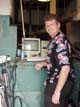
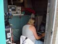
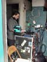
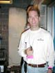
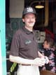
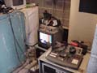

Internet workers
Some of the Internet workers. Not pictured: Matt Sheko, Brian Larkin, Gene Casaroll (cameras)
All images copyright 2000 Jack Lowe
|
Chuck Moore - Hydros News Coverage
In the Press Room with Paul Scurlock (in the sunglasses) |
|
|
 |
Chris Collins
AllWebSports.com producer |
|
 |
Bob Larson (Sorry for the back pic Bob)
Operating the video switcher |
|
 |
Phil Giubileo
Running the webcast presentation. His notebook on top the webcast rack unit. |
|
 |
Jim Wulff
The network guru |
|
 |
Brian Reed
Taking a break |
|
 |
The video equipment |